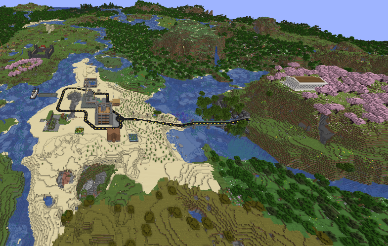
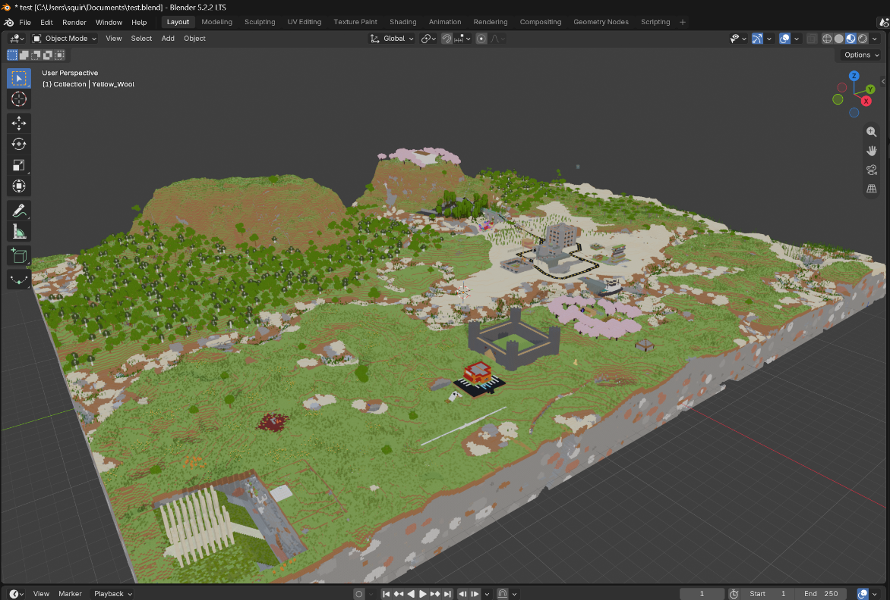
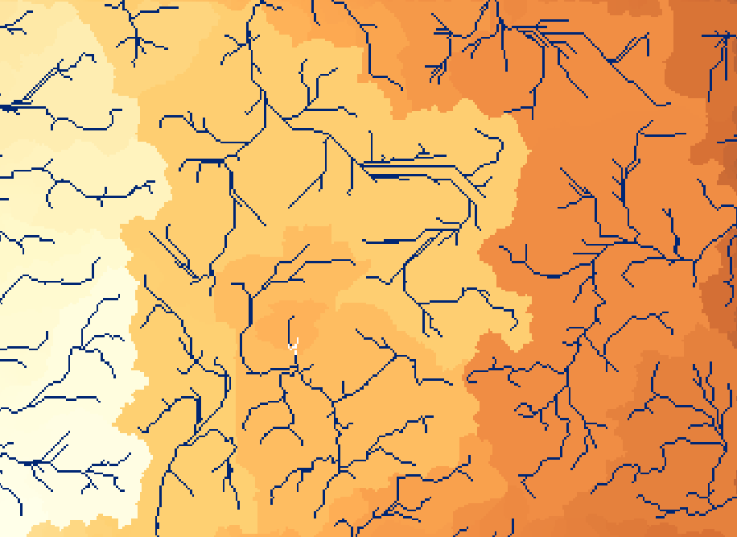
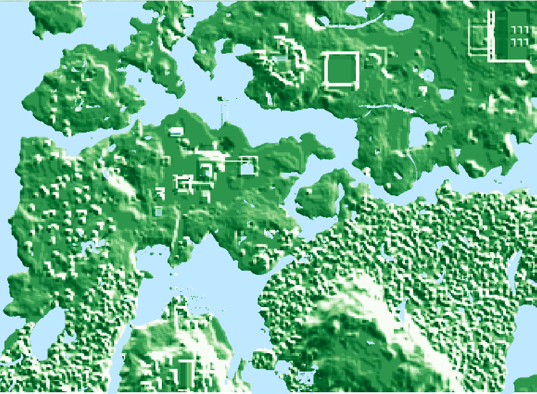
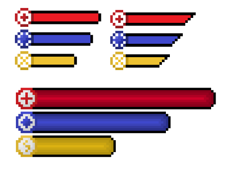

Minecraft Watershed Map
I created a basic watershed map showing where basins and streams would form, off of my Minecraft world with friends. Made using ArcGis
Introduction
One day, I was running my creeper farm while scrolling instagram reels During this time, I saw a reel on the puddles and floods mod on Minecraft. This made me curious as to how this would work on me and my friends world. However, as we were using a Hypixel SMP we couldn't use mods, so I decided to try and make a watershed map, as it would present a good opportunity to learn important software.
My main goal during this project was to learn ArcGis, and make a watershed map. While it is not the most accurate or good map due to the size of the section of the world, and the Minecraft terrain generation not being the most accurate, it was still interesting to do.

Starting
To start off, I had to find a way to convert my Minecraft world into a DEM. I first had to download the Minecraft world by copy and pasting the schematic from the server into a private world. Then, turning it into a DEM started. I attempted to use worldpainter to do so, however it removed all of the buildings, blockiness and features. This led me to turning the world into a 3d model, which I could turn into a multipatch. I had to remove some things in the model, such as water, grass, flowers, and most transparent blocks. This was so it did not change the flow, as water flowing into them destorys them ingame. However the program would treat them as a rigid bodies blocking water. Bellow is the model, with just the water removed. I used OBJ format.

Converting to a DEM
I started off by using the import 3d function on ArcGis Pro. This converted the 3d model into a Multipatch feature class. I then turned it into a raster, using the multipatch to raster feature. This turned it into a usable DEM. I set the cell size to 1 to emulate the 1 meter per block in Minecraft. I just used the default coordinates it gave. Lastly, I used the fill function in order to minor dips. I opted not to include different permeabilities, due to the sheer number of different blocks that were in the world.
Initial Calculations
I did not have to do many calculations myself, as the program did them. The first I had it do was run the flow direction. After, I put the flow direction into the basin funcion in order to see where water would build up. I set this as a yellow to orange gradient. I then used a conditional flow accumulation to set up the streams.

Making it look good
one type of room, but that is a work in progress. To make it look good, I created a hillshade layer using the premade function once again. I opted. Along with this I created a layer for the preexisitng water. I did this by doing the same process as before, except with a 3d model of only the top water layers only.

The UI
While creating the UI, we had to think of what to put on it. We decided on having the stats of health, stamina, and mana. Health would be used to take damage, stamina for sprinting, and mana for spells. I created multiple iterations, before settling on three final designs (seen in the picture). Here we chose the one best suited towards the style of the dungeon.
